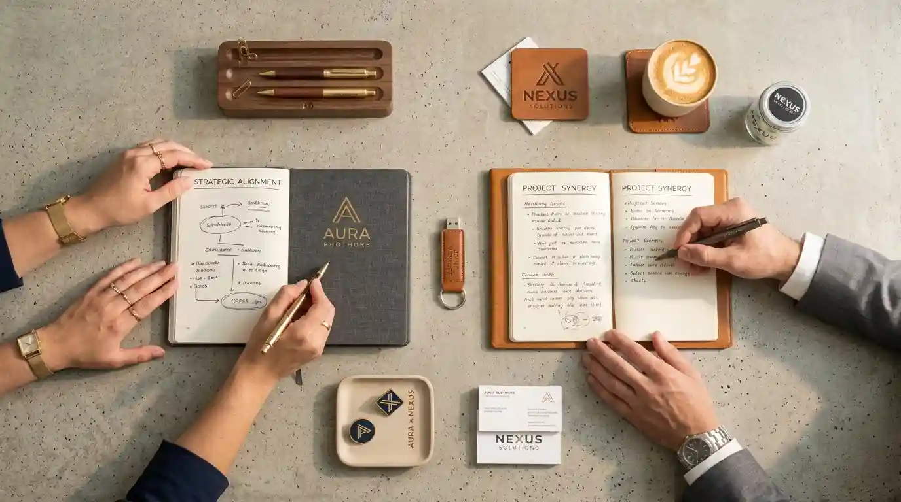

Memilih vendor alat tulis kantor (ATK) yang tepat adalah keputusan strategis yang berdampak langsung pada kelancaran operasional dan efisiensi biaya kantor Anda. Namun, dengan banyaknya pilihan supplier di pasaran, tidak jarang proses seleksi menjadi membingungkan dan memakan waktu.
Dalam artikel ini, kami akan membagikan panduan lengkap cara memilih vendor ATK yang tepat — mulai dari kriteria penilaian hingga tips negosiasi — agar Anda dapat membuat keputusan yang tepat dan mendapatkan mitra yang dapat diandalkan.
Mengapa Memilih Vendor ATK Itu Penting?
Vendor ATK bukan sekadar tempat membeli pulpen dan kertas. Mereka adalah mitra bisnis yang memastikan operasional kantor Anda berjalan lancar. Vendor yang tepat akan memberikan:
- Pasokan stabil — stok selalu tersedia saat dibutuhkan
- Harga kompetitif — membantu menghemat biaya operasional
- Kualitas terjamin — produk tahan lama dan nyaman digunakan
- Layanan responsif — siap membantu kapan pun Anda membutuhkan
- Dukungan administrasi — dokumen lengkap untuk pengadaan
Sebaliknya, vendor yang salah dapat menyebabkan masalah serius: stok kosong di saat kritis, produk berkualitas rendah, harga tidak transparan, hingga layanan yang tidak memuaskan.
Tips: Vendor ATK yang baik akan menjadi solusi, bukan sekadar penjual. Mereka akan membantu Anda merencanakan pengadaan, memberikan rekomendasi produk, dan memastikan semua kebutuhan terpenuhi.
Baca Juga Artikel Terkait:
Kriteria Memilih Vendor ATK yang Tepat
1. Legalitas dan Kredibilitas
Langkah pertama dan paling krusial: pastikan vendor memiliki legalitas yang jelas.
- NPWP — untuk keperluan administrasi perpajakan
- SIUP (Surat Izin Usaha Perdagangan) — bukti legalitas usaha
- TDP (Tanda Daftar Perusahaan) — pendaftaran resmi perusahaan
- Pengalaman — minimal 3-5 tahun di bidang ATK
Vendor yang memiliki legalitas lengkap menunjukkan profesionalisme dan komitmen terhadap bisnisnya. Ini juga penting jika Anda melakukan pengadaan untuk instansi pemerintah.
2. Portofolio dan Reputasi
Cek portofolio dan reputasi vendor sebelum memutuskan. Beberapa hal yang perlu diperhatikan:
- Klien yang pernah dilayani — apakah ada instansi atau perusahaan sejenis?
- Testimoni dari klien sebelumnya — cek di website atau minta referensi
- Rating dan ulasan — lihat di Google Maps, social media, atau marketplace
Vendor yang memiliki reputasi baik biasanya konsisten dalam memberikan layanan berkualitas dan terpercaya dalam memenuhi janji.

3. Kelengkapan Produk
Vendor ATK yang baik menyediakan produk yang lengkap untuk memenuhi semua kebutuhan kantor Anda. Pastikan mereka memiliki:
- Alat tulis dasar — pulpen, pensil, spidol, penghapus
- Kertas & perlengkapan cetak — HVS, kertas karbon, tinta
- Perlengkapan administrasi — map, stapler, perekat
- Perlengkapan pengarsipan — ordner, box file, map
- Perlengkapan meeting — whiteboard marker, flipchart
Dengan satu vendor yang lengkap, Anda tidak perlu repot mencari ke beberapa supplier untuk produk yang berbeda.
4. Harga dan Skema Pembayaran
Bandingkan harga dari beberapa vendor sebelum memutuskan. Namun, jangan hanya tergiur dengan harga murah. Perhatikan juga:
- Kualitas produk — harga murah tidak selalu berarti kualitas baik
- Skema pembayaran — apakah ada opsi tempo atau cicilan?
- Diskon volume — apakah ada potongan untuk pembelian besar?
Vendor yang transparan akan memberikan rincian harga yang jelas, termasuk biaya pengiriman dan pajak.
5. Layanan Pengiriman
Pengiriman cepat dan andal adalah faktor kunci, terutama jika Anda memiliki kebutuhan mendesak. Perhatikan:
- Estimasi waktu pengiriman — berapa hari setelah pemesanan?
- Biaya pengiriman — apakah gratis untuk pembelian tertentu?
- Jangkauan pengiriman — apakah mencakup seluruh Indonesia?
Vendor yang baik biasanya memiliki sistem pengiriman yang terintegrasi dan dapat diandalkan.
Rekomendasi Artikel Lainnya:
6. Layanan Purna Jual
Layanan purna jual yang baik mencerminkan komitmen vendor terhadap kepuasan pelanggan. Pastikan mereka memiliki:
- Garansi produk — untuk produk yang cacat atau rusak
- Kebijakan retur — jelas dan mudah dipahami
- Dukungan teknis — untuk produk elektronik atau mesin
Checklist Memilih Vendor ATK
Sebelum memutuskan, tanyakan 7 hal ini ke calon vendor:
- ✅ "Apakah vendor memiliki legalitas yang lengkap (NPWP, SIUP, TDP)?"
- ✅ "Berapa pengalaman vendor melayani instansi seperti kami?"
- ✅ "Apakah produk yang dijual original dan bergaransi?"
- ✅ "Bagaimana sistem pemesanan dan pembayaran?"
- ✅ "Apakah ada diskon untuk pembelian dalam jumlah besar?"
- ✅ "Bagaimana kebijakan pengiriman dan estimasi waktu?"
- ✅ "Apa kebijakan garansi dan retur produk?"
Rekomendasi Vendor ATK Terpercaya
Alat Tulis Kantor adalah vendor ATK terpercaya yang siap menjadi mitra strategis bagi perusahaan, instansi pemerintah, dan institusi pendidikan Anda. Kami menawarkan:
- Produk ATK lengkap dari berbagai merek ternama
- Harga kompetitif dengan diskon khusus volume
- Legalitas lengkap untuk mendukung pengadaan
- Pengiriman cepat ke seluruh Indonesia
- Garansi produk dan layanan purna jual
- Konsultasi gratis untuk perencanaan pengadaan
Pilih vendor ATK yang tepat, dan jadikan operasional kantor Anda lebih efisien!
Butuh rekomendasi vendor ATK terpercaya? Tim Alat Tulis Kantor siap membantu. Hubungi kami sekarang untuk konsultasi gratis!
Bagikan artikel ini: